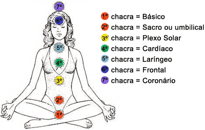
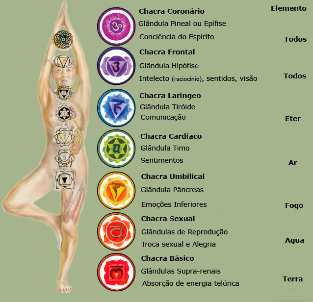
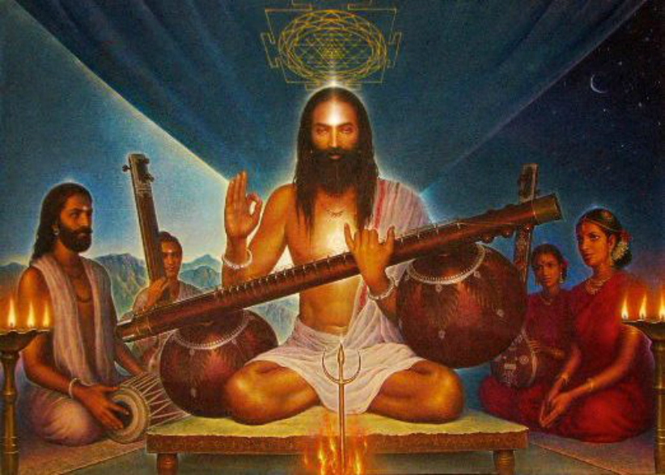

Chakras!

Os chakras Magnos
Muladhara: Chakra Base
SVADHISTHANA: Chakra Sacro (2 centímetros abaixo do umbigo)
MANIPURA: PLEXO SOLAR
ANAHATA: Chakra Cardíaco (entre o timo e o coração)
VISHUDDHA: Chakra Laríngeo
AJNA: Chakra Frontal (entre as sombrancelhas)
SAHASRARA: Chakra Coronário (topo da cabeça)

Veja com mais detalhes neste
link.
A importância dos mantras

Palavra que provém do sânscrito e significa linguagem divina, observando que
pode ter vários significados que se diferem sutilmente.
Veja no
link
um artigo mais completo sobre.
ESPIRITUALIDADE E CONSCIÊNCIA - por Wagner Borges
Espiritualidade é um estado de consciência; não é doutrina, não!
É o que se leva dentro do coração.
É o discernimento em ação!
É o amor em profusão.
É a luz nas idéias e equilíbrio na senda.
É o valor consciencial da alegria na jornada.
É a valorização da vida e de todos os aprendizados.
É mais do que só viver; é sentir a vida que pulsa em todas as coisas.
É respeitar a si mesmo, para respeitar o próximo e a natureza.
É ter a plena noção de que nada acaba na morte do corpo, pois a consciência segue além, algures, na eternidade...
É saber disso - com certeza -, e não apenas crer nisso.
É viver isso - com clareza -, sem fraquejar na senda.
É ser um presente, para si mesmo, para os outros e para a própria vida.
Espiritualidade é brilho nos olhos e luz nas mãos.
E isso não depende dessa ou daquela doutrina; depende apenas do próprio despertar espiritual; depende do discernimento consciencial se unir aos sentimentos legais, no equilíbrio das próprias energias, nos atos da vida.
Ah, espiritualidade é qualidade perene; não se perde nem se ganha; apenas é!
É valor interno, que descerra o olhar para o infinito... para além dos sentidos convencionais. É janela espiritual que se abre, dentro de si mesmo, para ver a luz que está em tudo!
Espiritualidade é essa maravilha: o encontro consigo mesmo, em paz.
Espiritualidade é ser feliz, mesmo que ninguém entenda por quê.
É quando você se alegra, só pelo fato de estar vivo!
É quando o seu chacra* do coração se abre igual a uma rosa, e você se sente possuído por um amor que não é condicionado a coisa alguma, mas que ama tudo.
É quando você nem sabe explicar porque ama; só sabe que ama.
Espiritualidade não depende de estar na Terra ou no Espaço; de estar solteiro ou casado; de pertencer a esse ou aquele lugar; ou de crer nisso ou naquilo.
É valor de consciência, alcançado por esforço próprio e faz o viver se tornar sadio.
Espiritualidade é apenas isso: SER FELIZ!
Ou, como ensinavam os sábios celtas de outrora: SER UM PRESENTE!
Paz e Luz.